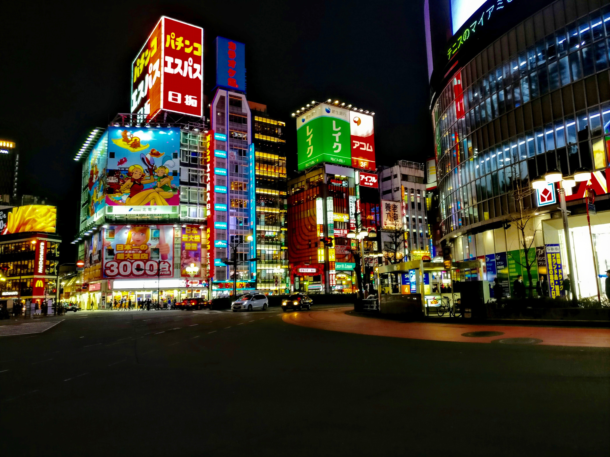
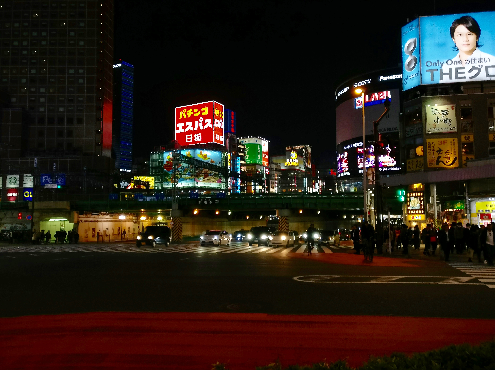
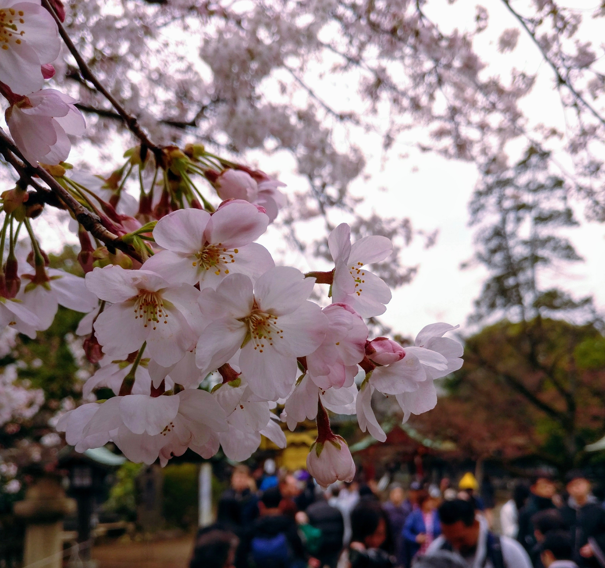
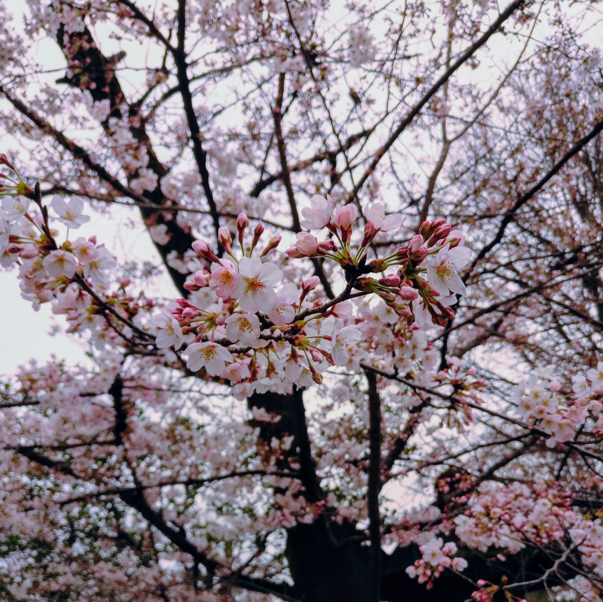
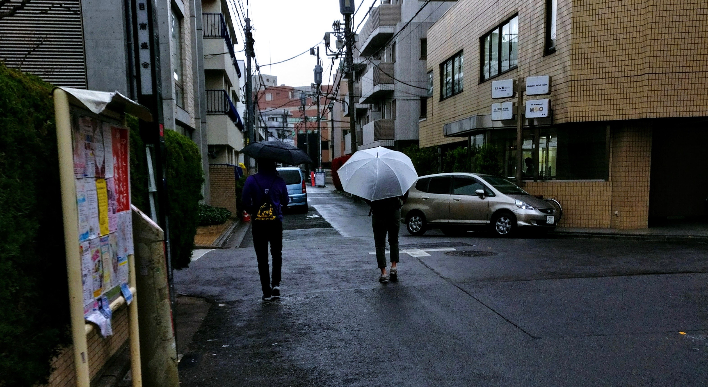
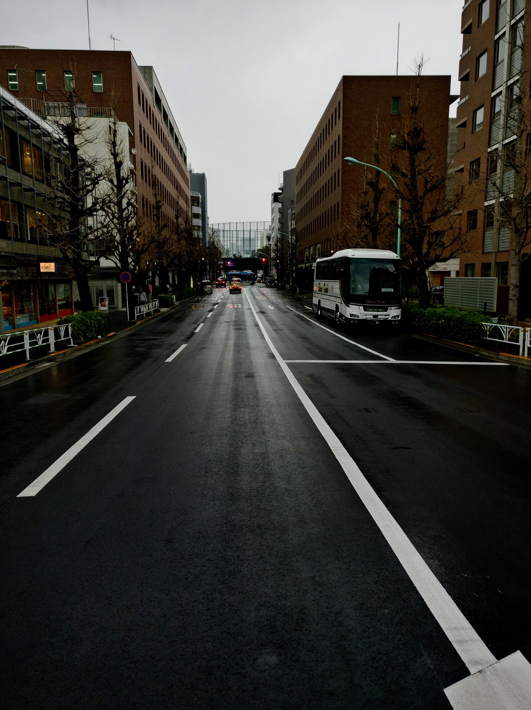
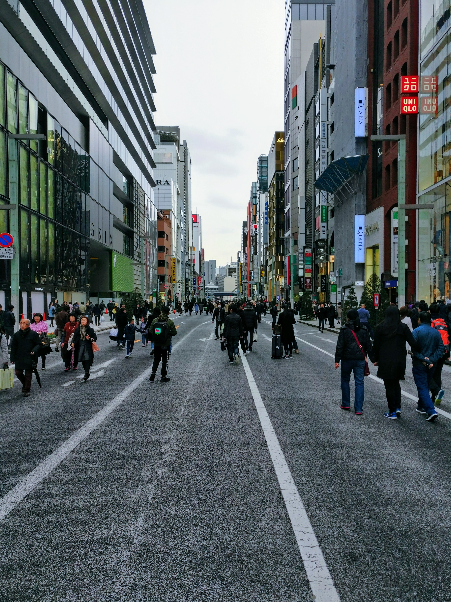
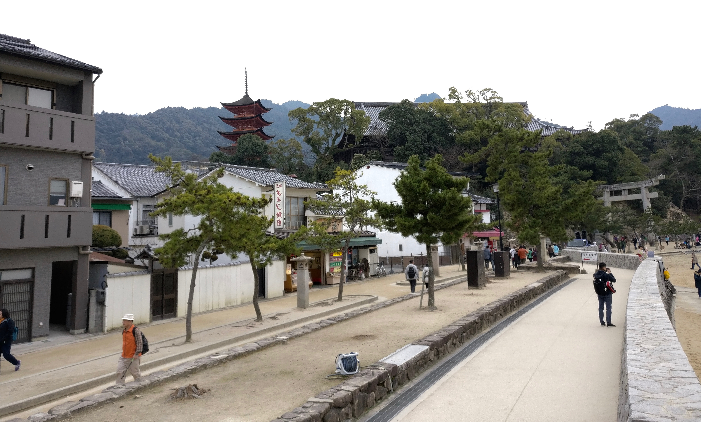
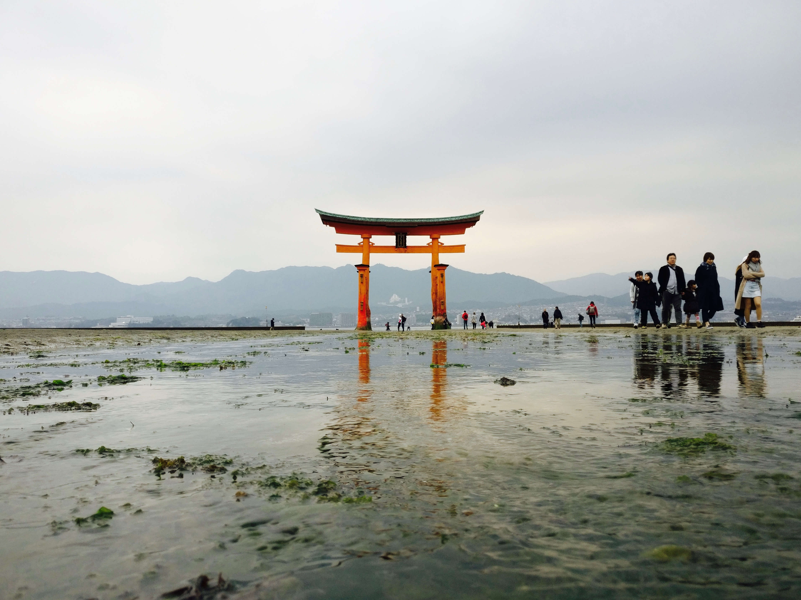
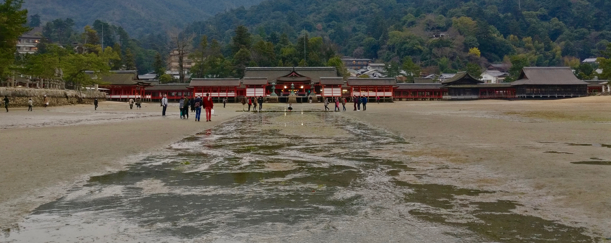

#E75E5A
#008B00
#44C5F1
#CC98C1
#374244
Tokyo
Frankly speaking, this city doesn't sleep that much.











#9F1B00
#8FA49D
#EDCD54
#515418
#EFE7DC
Miyajima
Miyajima is a short ferry ride from the Hiroshima mainland and is well-known for the submerged shrine on its coast and the hiking trail on its mountain. During low tide the water recedes and carves small rivers through the sand, giving visitors the chance to walk out to the shrine. You can also see people out collecting mud samples close to water. Sometimes the deer on the island will decide to come out too.




The deer on Miyajima are wild, just like the ones in Nara, but they won't go so far as to bite you if they think you have food.
They also won't be sure what to do if you bow towards them.
They also won't be sure what to do if you bow towards them.
